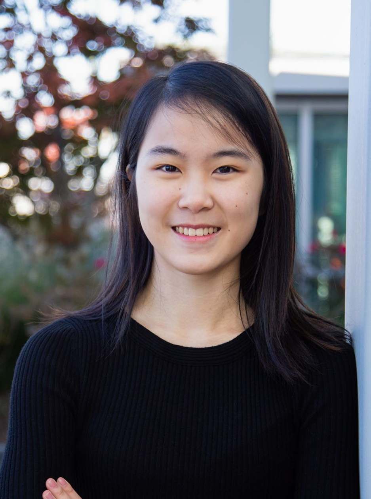

Belinda Li

I am a software engineer at Facebook AI Applied Research, where I work on applying state-of-the-art techniques from AI and NLP research to combat integrity problems faced by Facebook. I also do (more pure) research in natural language processing.
Previously, I obtained my B.S. in Computer Science through the University of Washington, where I was fortunate enough to be advised by Professor Luke Zettlemoyer.
If you are a UW undergrad looking for research experience in NLP or machine learning, please feel free to reach out to me! You can view my contact policy here.
Links- Email: belindazli65@gmail.com // belindali@fb.com
- Twitter: belinda_nlp
- LinkedIn: Belinda Li
News
| Apr. 05, 2020 | Happy to announce that I’ll be starting my PhD this fall at MIT. |
| Apr. 03, 2020 | Short paper on active learning for coreference resolution accepted to ACL 2020. (First publication! 🎉) Congrats and thanks to my wonderful coauthors, Gabi and Luke. |
| Aug. 08, 2019 | Joined Facebook. |
Publications
-
Active Learning for Coreference Resolution using Discrete Annotation
Belinda Li, Gabriel Stanovsky, and Luke Zettlemoyer
In Annual Meeting of the Association for Computational Linguistics (ACL), 2020, (to appear).
Manuscript forthcoming. [Demo (Timing Experiments)]
Service
Program Committee (Reviewer): COLING 2020.
Misc
Outside of work, I dance ballet and Chinese classical dance at Hengda Dance Academy.
I also play the piano (though I've unfortunately been out of practice for a few years).